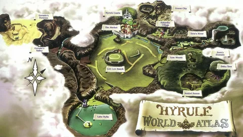

Добро пожаловать в Хайрул
Перед тобой открывается огромный мир приключений. Исследуй земли королевства, находи сокровища, знакомься с жителями и раскрывай тайны древних храмов.
Путешествие
Твой общий прогресс исследования Хайрула.
Подземелья
Сколько древних испытаний уже пройдено.
Следующая цель
Исследуй лес Кокири и найди первые сокровища.
Последние события
Отдых у костра
Передохни после долгого путешествия. Отдых восстановит здоровье и магию.
Земли Хайрула
Каждая область королевства хранит свои истории, секреты и сокровища.
Карта Хайрула
Выбери область, чтобы узнать о ней больше.

Хайрул
Выбери точку на карте, чтобы открыть описание региона.
Инвентарь Линка
Выбирай предметы, изучай их свойства и следи за своей коллекцией.
Древние подземелья
Шесть великих испытаний ждут героя. Изучай механизмы, собирай ключи и готовься к встрече с хранителями храмов.
Задания путешественника
Выполняй поручения, получай награды и открывай новые страницы своей истории.
Жители Хайрула
Поговори с жителями королевства. Возможно, они знают что-то важное.
Разговор
Музыка окарины
Играй на окарине кнопками или клавиатурой, записывай свои мелодии и тренируй музыкальную память.
Твоя окарина
Нажимай на отверстия окарины или используй клавиши клавиатуры.
Окарина готова к игре.
Управление: W — До · A — Ре · S — Ми · J — Соль · K — Ля
Музыкальная тренировка
Запомни последовательность нот и повтори её на окарине.
Нажми «Начать тренировку», чтобы получить задание.
Мои мелодии
Дневник путешествия
Здесь записываются важные события твоего приключения.
История
Личная заметка
Коллекция достижений
Собирай памятные знаки за исследование мира и прохождение испытаний.